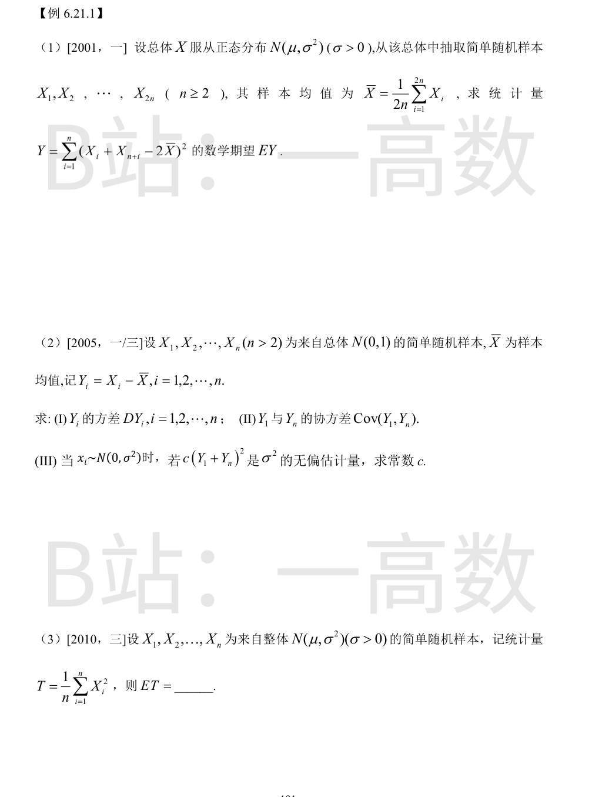
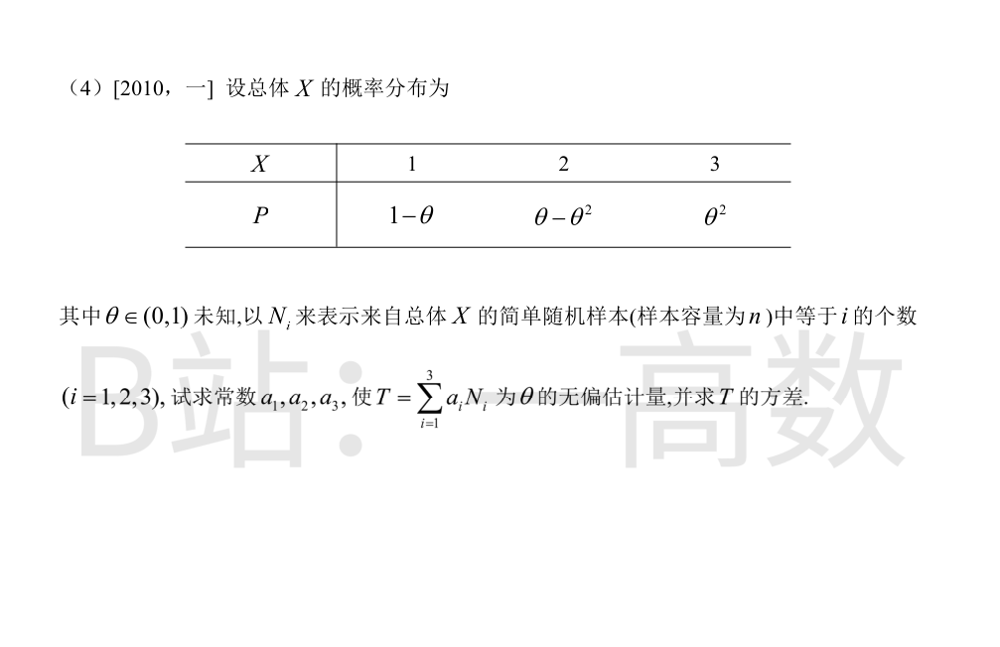
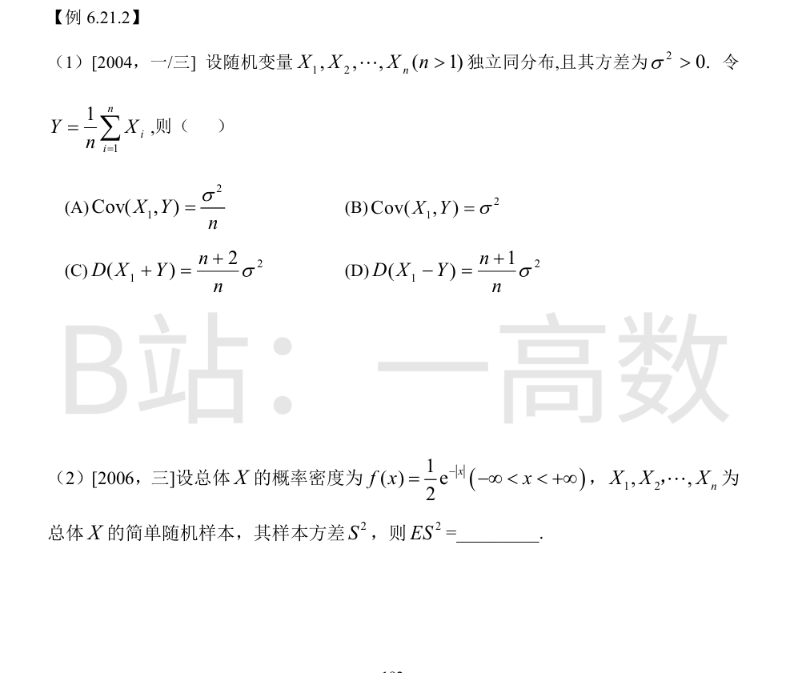
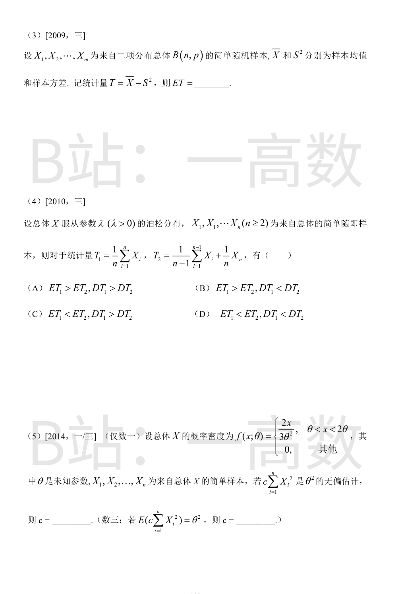
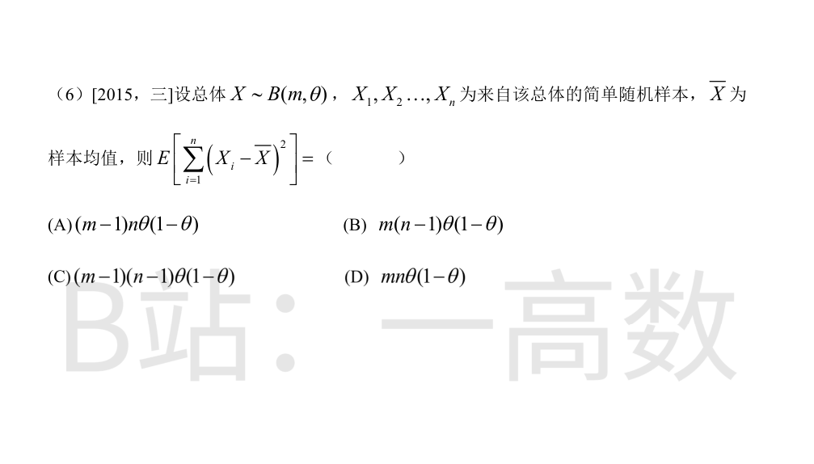
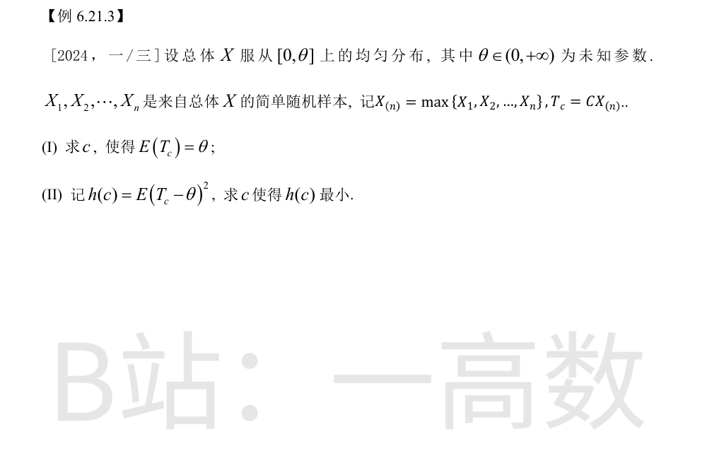

令 $Z_i=X_i+X_{n+i}\ (i=1,\dots,n)$，则 $Z_1,\dots,Z_n$ 独立同分布，且
$$E(Z_i)=2\mu,\qquad D(Z_i)=D(X_i)+D(X_{n+i})=2\sigma^2.$$
其样本均值为 $\bar Z=\dfrac{1}{n}\sum_{i=1}^n Z_i=\dfrac{1}{n}\sum_{i=1}^{2n}X_i=2\bar X$，于是
$$Y=\sum_{i=1}^n (Z_i-\bar Z)^2.$$
这是总体 $Z$（方差 $2\sigma^2$）的样本离差平方和，$\dfrac{Y}{2\sigma^2}\sim\chi^2(n-1)$，故
$$EY=(n-1)\cdot 2\sigma^2=2(n-1)\sigma^2.$$
**(I)** $\mathrm{Cov}(X_i,\bar X)=\dfrac{1}{n}D(X_i)=\dfrac{1}{n}$，$D(\bar X)=\dfrac{1}{n}$，故
$$D(Y_i)=D(X_i)+D(\bar X)-2\mathrm{Cov}(X_i,\bar X)=1+\frac{1}{n}-\frac{2}{n}=1-\frac{1}{n}=\frac{n-1}{n}.$$
**(II)**
$$\mathrm{Cov}(Y_1,Y_n)=\mathrm{Cov}(X_1,\bar X)-\mathrm{Cov}(X_1,\bar X)-\mathrm{Cov}(\bar X,X_n)+D(\bar X).$$
逐项写开：$\mathrm{Cov}(X_1,X_n)-\mathrm{Cov}(X_1,\bar X)-\mathrm{Cov}(\bar X,X_n)+D(\bar X)=0-\dfrac{1}{n}-\dfrac{1}{n}+\dfrac{1}{n}=-\dfrac{1}{n}.$
**(III)** 此时 $D(Y_i)=\sigma^2\dfrac{n-1}{n}$，$\mathrm{Cov}(Y_1,Y_n)=-\dfrac{\sigma^2}{n}$，故
$$E(Y_1+Y_n)=0,\qquad D(Y_1+Y_n)=\frac{2(n-1)\sigma^2}{n}-\frac{2\sigma^2}{n}=\frac{2(n-2)\sigma^2}{n}.$$
于是 $E\left[c(Y_1+Y_n)^2\right]=c\,D(Y_1+Y_n)=c\cdot\dfrac{2(n-2)\sigma^2}{n}=\sigma^2$，解得
$$c=\frac{n}{2(n-2)}.$$
由样本与总体同分布，$E(X_i^2)=E(X^2)=D(X)+\left[E(X)\right]^2=\sigma^2+\mu^2$，故
$$ET=\frac{1}{n}\sum_{i=1}^n E(X_i^2)=\mu^2+\sigma^2.$$
$N_i\sim B(n,p_i)$，其中 $p_1=1-\theta,\ p_2=\theta-\theta^2,\ p_3=\theta^2$，故
$$E(N_1)=n(1-\theta),\quad E(N_2)=n(\theta-\theta^2),\quad E(N_3)=n\theta^2.$$
$$E(T)=na_1+n(a_2-a_1)\theta+n(a_3-a_2)\theta^2.$$
要对一切 θ∈(0,1) 有 $E(T)=\theta$，比较系数：常数项 $na_1=0\Rightarrow a_1=0$；θ 系数 $n(a_2-a_1)=1\Rightarrow a_2=\dfrac{1}{n}$；θ² 系数 $n(a_3-a_2)=0\Rightarrow a_3=\dfrac{1}{n}$。
此时 $T=\dfrac{N_2+N_3}{n}$，即样本中 X≠1 的个数除以 n。而 $P\{X\ne 1\}=\theta$，故 $N_2+N_3\sim B(n,\theta)$，
$$D(T)=\frac{1}{n^2}\,n\theta(1-\theta)=\frac{\theta(1-\theta)}{n}.$$



$Y=\dfrac{1}{n}\sum_{i=1}^n X_i$。由独立性，交叉协方差全为零：
$$\mathrm{Cov}(X_1,Y)=\frac{1}{n}\mathrm{Cov}\left(X_1,\sum_{i=1}^n X_i\right)=\frac{1}{n}D(X_1)=\frac{\sigma^2}{n}.$$
故 (A) 对，(B) 错。
$$D(X_1+Y)=D(X_1)+D(Y)+2\mathrm{Cov}(X_1,Y)=\sigma^2+\frac{\sigma^2}{n}+\frac{2\sigma^2}{n}=\frac{n+3}{n}\sigma^2 \ne \frac{n+2}{n}\sigma^2,$$
$$D(X_1-Y)=\sigma^2+\frac{\sigma^2}{n}-\frac{2\sigma^2}{n}=\frac{n-1}{n}\sigma^2 \ne \frac{n+1}{n}\sigma^2,$$
故 (C)、(D) 均错。选 (A)。
样本方差满足 $E(S^2)=D(X)$（S² 是总体方差的无偏估计），只需求 $D(X)$。
密度为偶函数，故 $E(X)=0$，且
$$E(X^2)=\int_{-\infty}^{+\infty}x^2\cdot\frac{1}{2}e^{-|x|}dx=\int_0^{+\infty}x^2 e^{-x}dx=\Gamma(3)=2!=2.$$
故 $D(X)=E(X^2)-[E(X)]^2=2$，从而 $ES^2=2$。
样本均值、样本方差分别为总体期望与方差的无偏估计：$E\bar X=np$，$E(S^2)=D(X)=np(1-p)$。
故
$$ET=E\bar X-E(S^2)=np-np(1-p)=np^2.$$
期望：$ET_1=\lambda$；$ET_2=\dfrac{n-1}{n-1}\lambda+\dfrac{\lambda}{n}=\lambda\left(1+\dfrac{1}{n}\right)>\lambda$，故 $ET_1<ET_2$。
方差（各项独立）：
$$DT_1=\frac{\lambda}{n},\qquad DT_2=\frac{1}{(n-1)^2}(n-1)\lambda+\frac{1}{n^2}\lambda=\frac{\lambda}{n-1}+\frac{\lambda}{n^2}>\frac{\lambda}{n}=DT_1.$$
故 $ET_1<ET_2$ 且 $DT_1<DT_2$，选 (D)。
$$E(X^2)=\int_{\theta}^{2\theta}x^2\cdot\frac{2x}{3\theta^2}dx=\frac{2}{3\theta^2}\int_\theta^{2\theta}x^3dx=\frac{2}{3\theta^2}\cdot\frac{(2\theta)^4-\theta^4}{4}=\frac{2}{3\theta^2}\cdot\frac{15\theta^4}{4}=\frac{5}{2}\theta^2.$$
无偏性要求 $E\left[c\sum_{i=1}^n X_i^2\right]=cn\cdot\dfrac{5}{2}\theta^2=\theta^2$，解得
$$c=\frac{2}{5n}.$$
样本离差平方和与样本方差满足 $\sum_{i=1}^n (X_i-\bar X)^2=(n-1)S^2$，而 $E(S^2)=D(X)$，故
$$E\left[\sum_{i=1}^n (X_i-\bar X)^2\right]=(n-1)D(X)=(n-1)\,m\theta(1-\theta).$$
选 (C)。

$X_{(n)}$ 的分布函数 $F(t)=(t/\theta)^n\ (0\le t\le \theta)$，密度 $f(t)=\dfrac{nt^{n-1}}{\theta^n}$。
$$E(X_{(n)})=\int_0^\theta t\cdot\frac{nt^{n-1}}{\theta^n}dt=\frac{n}{n+1}\theta.$$
令 $E(T_c)=c\cdot\dfrac{n}{n+1}\theta=\theta$，解得 $c=\dfrac{n+1}{n}$。
先算 $E(X_{(n)}^2)=\displaystyle\int_0^\theta t^2\cdot\frac{nt^{n-1}}{\theta^n}dt=\frac{n}{n+2}\theta^2$，故 $E(T_c^2)=\dfrac{c^2 n}{n+2}\theta^2$。
$$h(c)=E(T_c^2)-2\theta E(T_c)+\theta^2=\frac{c^2 n}{n+2}\theta^2-\frac{2cn}{n+1}\theta^2+\theta^2.$$
对 c 求导：
$$h'(c)=\frac{2cn}{n+2}\theta^2-\frac{2n}{n+1}\theta^2=0\ \Longrightarrow\ c=\frac{n+2}{n+1}.$$
$h''(c)=\dfrac{2n\theta^2}{n+2}>0$，故 $c=\dfrac{n+2}{n+1}$ 时 $h(c)$ 取最小值。
（对比 (I) 的 $\frac{n+1}{n}$：均方误差最优的 c 略大于无偏修正的 c。）